獣医師監修の6つのポイントで、あなたの猫に最適なケアを導きます
子猫〜老猫、品種ごとの特性に合わせた具体的なケア方法を提案します。
食費・医療費・用品費まで、項目別に飼育費用を詳細シミュレーション。
気になる点はAIアシスタントに質問。診断精度をさらに高められます。
腎臓病・関節炎など高齢猫のリスクに備えた専門プランを強化。
ワクチン・健診・予防薬のタイミングを年間スケジュールで管理。
複数の猫・条件を並べて比較。最適な飼育プランを検討できます。
スコア・費用内訳・ケア方針まで、診断結果はこんなレポートで届きます
あなたの猫の現在のケア充実度。
不足ポイントも具体的に提示します。
月額・年額・5年間の総額まで、内訳グラフで一目で把握。
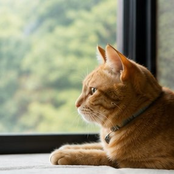
年齢と生活環境に合った食事・運動・健康管理の指針。
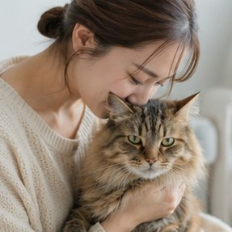
見逃しがちな体調変化のチェックポイントを提示。
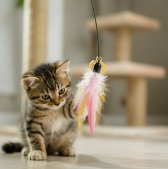
プランに合ったフード・ケア用品をご提案します。
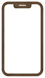
サービス画面の紹介スマホ最適化された診断結果・費用グラフ・比較テーブルをそのまま確認できます
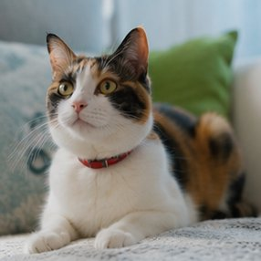
① 診断結果サマリー費用カテゴリ別の割合
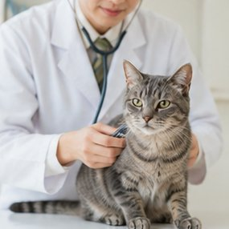
② ケア方針レポートおすすめケア項目
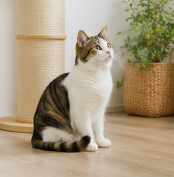
③ プラン比較テーブル2プランを横並び比較
診断ロジック・費用試算・ケア提案のすべてを臨床知見と公的データで裏付け
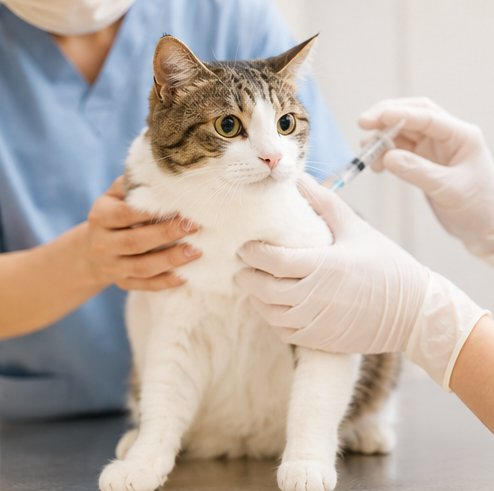
猫の年齢・品種ごとの健康リスクを踏まえたケア指針を設計しています。
飼育費はペットフード協会等の公的調査データを根拠に算出しています。
最新の費用相場・予防医療情報に合わせて内容を見直しています。
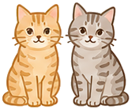
こんな方におすすめ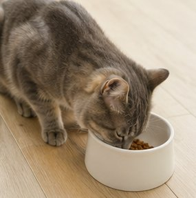
飼育費用とケアの準備リストを把握したい方に。
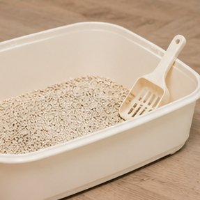
高齢期の健康管理と費用に備えたい方に。
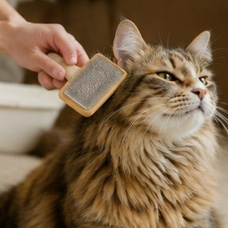
複数の猫の費用を比較・最適化したい方に。
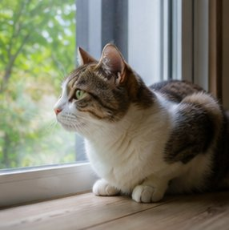
医療費リスクと保険の必要性を確認したい方に。
年齢・品種・生活環境を選ぶだけ。
最適なケアと費用を自動算出。
費用内訳とケア提案をチェック。
プラン比較やSNS共有も可能。
はい、完全無料・登録不要です。会員登録やアプリのインストールも不要で、ブラウザからすぐにご利用いただけます。
診断ロジックや費用試算は獣医師の知見・公的データベースを根拠に設計しています。個別の診断・治療は動物病院にご相談ください。
はい。子猫・成猫・シニア・老猫まで各ライフステージに対応し、シニア猫向けの専門ケアプランを提案します。
条件を変えた複数のシナリオを保存して、費用とケア内容を並べて比較できます。
はい。スマホ・タブレット・PCすべてに対応。結果表示や比較テーブルもモバイル最適化済みです。
いいえ。すべての処理はブラウザ内で完結し、入力データのサーバー送信は行いません。
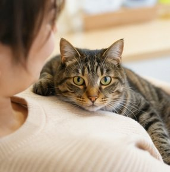